2024 Advanced Higher Computing Science marking instructions
Source: Scottish Qualifications Authority (SQA) / Qualifications Scotland. This is a StemInteract HTML companion, not an official HTML edition. Selectable text is supplied alongside original page images. Use the images or original PDF for equations, powers, fractions, vector notation, tables and diagrams; text extraction cannot fully preserve mathematical layout.
Jump to a question
PDF page 1
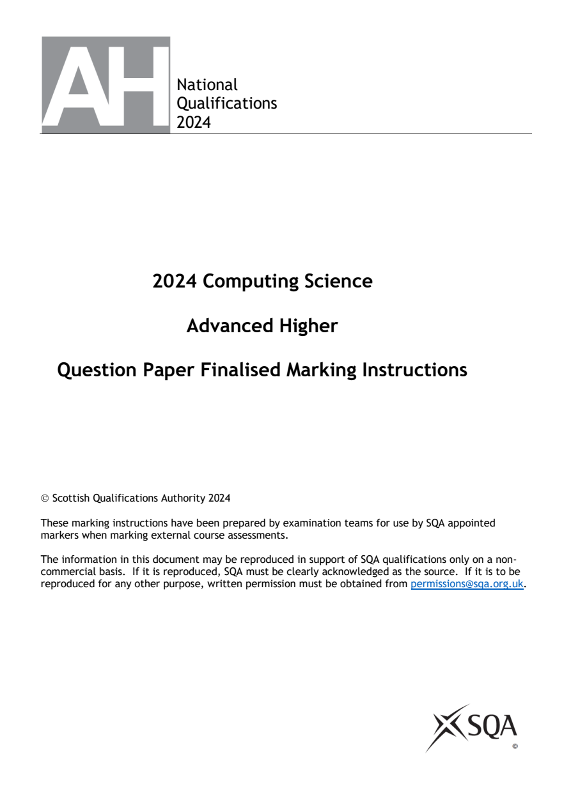
Selectable page text
National
Qualifications
2024
2024 Computing Science
Advanced Higher
Question Paper Finalised Marking Instructions
© Scottish Qualifications Authority 2024
These marking instructions have been prepared by examination teams for use by SQA appointed
markers when marking external course assessments.
The information in this document may be reproduced in support of SQA qualifications only on a non-
commercial basis. If it is reproduced, SQA must be clearly acknowledged as the source. If it is to be
reproduced for any other purpose, written permission must be obtained from permissions@sqa.org.uk.PDF page 2
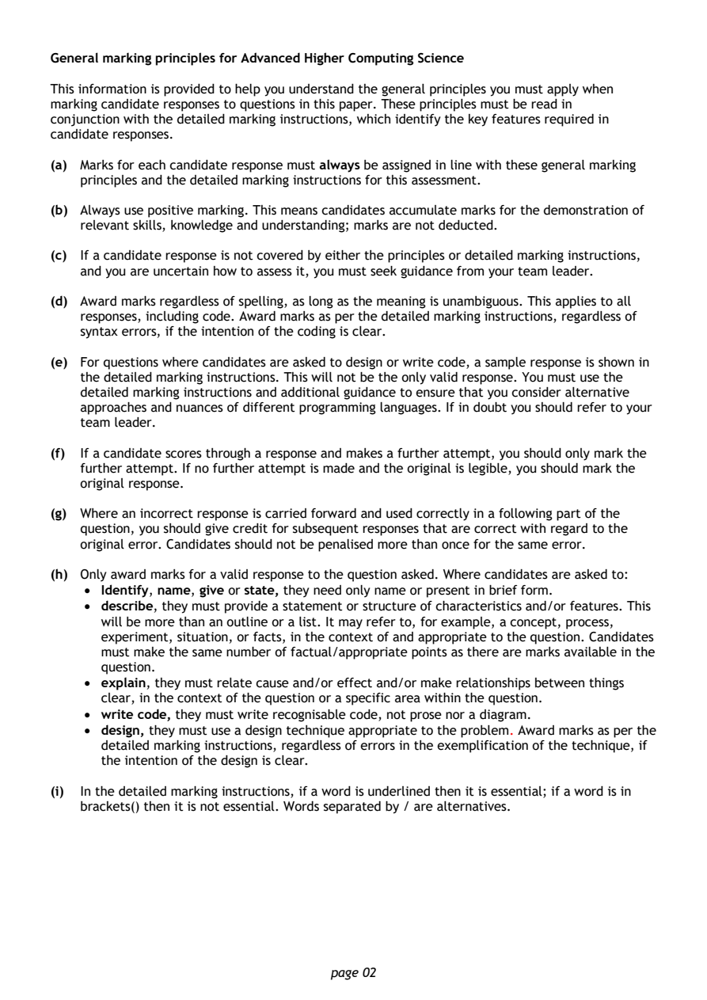
Selectable page text
General marking principles for Advanced Higher Computing Science
This information is provided to help you understand the general principles you must apply when
marking candidate responses to questions in this paper. These principles must be read in
conjunction with the detailed marking instructions, which identify the key features required in
candidate responses.
(a) Marks for each candidate response must always be assigned in line with these general marking
principles and the detailed marking instructions for this assessment.
(b) Always use positive marking. This means candidates accumulate marks for the demonstration of
relevant skills, knowledge and understanding; marks are not deducted.
(c) If a candidate response is not covered by either the principles or detailed marking instructions,
and you are uncertain how to assess it, you must seek guidance from your team leader.
(d) Award marks regardless of spelling, as long as the meaning is unambiguous. This applies to all
responses, including code. Award marks as per the detailed marking instructions, regardless of
syntax errors, if the intention of the coding is clear.
(e) For questions where candidates are asked to design or write code, a sample response is shown in
the detailed marking instructions. This will not be the only valid response. You must use the
detailed marking instructions and additional guidance to ensure that you consider alternative
approaches and nuances of different programming languages. If in doubt you should refer to your
team leader.
(f) If a candidate scores through a response and makes a further attempt, you should only mark the
further attempt. If no further attempt is made and the original is legible, you should mark the
original response.
(g) Where an incorrect response is carried forward and used correctly in a following part of the
question, you should give credit for subsequent responses that are correct with regard to the
original error. Candidates should not be penalised more than once for the same error.
(h) Only award marks for a valid response to the question asked. Where candidates are asked to:
• Identify, name, give or state, they need only name or present in brief form.
• describe, they must provide a statement or structure of characteristics and/or features. This
will be more than an outline or a list. It may refer to, for example, a concept, process,
experiment, situation, or facts, in the context of and appropriate to the question. Candidates
must make the same number of factual/appropriate points as there are marks available in the
question.
• explain, they must relate cause and/or effect and/or make relationships between things
clear, in the context of the question or a specific area within the question.
• write code, they must write recognisable code, not prose nor a diagram.
• design, they must use a design technique appropriate to the problem. Award marks as per the
detailed marking instructions, regardless of errors in the exemplification of the technique, if
the intention of the design is clear.
(i) In the detailed marking instructions, if a word is underlined then it is essential; if a word is in
brackets() then it is not essential. Words separated by / are alternatives.
page 02PDF page 3
Question 1Question 2Question 3Question 4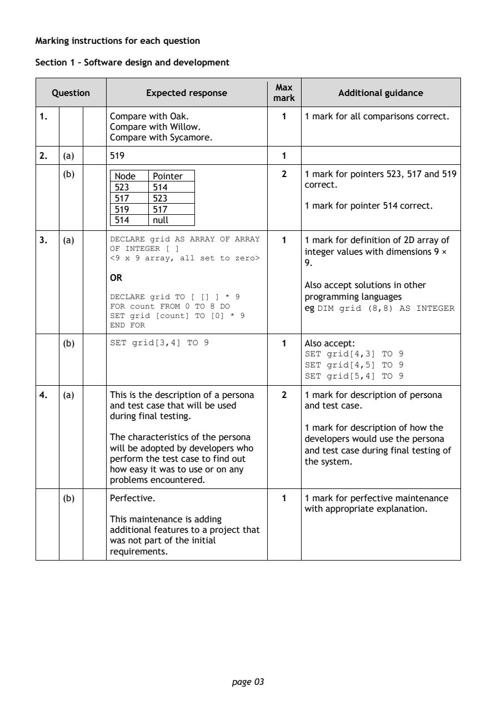
Selectable page text
Marking instructions for each question
Section 1 – Software design and development
Max
Question Expected response Additional guidance
mark
1. Compare with Oak. 1 1 mark for all comparisons correct.
Compare with Willow.
Compare with Sycamore.
2. (a) 519 1
(b) Node Pointer 2 1 mark for pointers 523, 517 and 519
correct.
523 514
517 523
1 mark for pointer 514 correct.
519 517
514 null
3. (a) DECLARE grid AS ARRAY OF ARRAY 1 1 mark for definition of 2D array of
OF INTEGER [ ]
integer values with dimensions 9 ×
<9 x 9 array, all set to zero>
9.
OR
Also accept solutions in other
DECLARE grid TO [ [] ] * 9 programming languages
FOR count FROM 0 TO 8 DO eg DIM grid (8,8) AS INTEGER
SET grid [count] TO [0] *
9
END FOR
(b) SET grid[3,4] TO 9 1 Also accept:
SET grid[4,3] TO 9
SET grid[4,5] TO 9
SET grid[5,4] TO 9
4. (a) This is the description of a persona 2 1 mark for description of persona
and test case that will be used and test case.
during final testing.
1 mark for description of how the
The characteristics of the persona developers would use the persona
will be adopted by developers who and test case during final testing of
perform the test case to find out
the system.
how easy it was to use or on any
problems encountered.
(b) Perfective. 1 1 mark for perfective maintenance
with appropriate explanation.
This maintenance is adding
additional features to a project that
was not part of the initial
requirements.
page 03PDF page 4
Question 5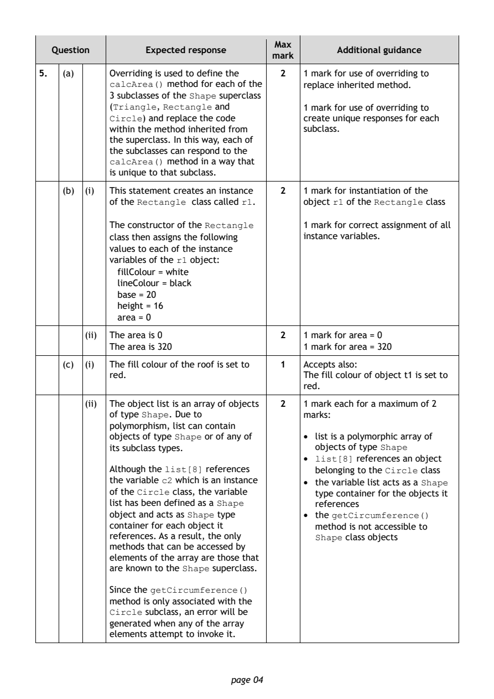
Selectable page text
Max
Question Expected response Additional guidance
mark
5. (a) Overriding is used to define the 2 1 mark for use of overriding to
calcArea() method for each of the replace inherited method.
3 subclasses of the Shape superclass
(Triangle, Rectangle and 1 mark for use of overriding to
Circle) and replace the code create unique responses for each
within the method inherited from subclass.
the superclass. In this way, each of
the subclasses can respond to the
calcArea() method in a way that
is unique to that subclass.
(b) (i) This statement creates an instance 2 1 mark for instantiation of the
of the Rectangle class called r1. object r1 of the Rectangle class
The constructor of the Rectangle 1 mark for correct assignment of all
class then assigns the following instance variables.
values to each of the instance
variables of the r1 object:
fillColour = white
lineColour = black
base = 20
height = 16
area = 0
(ii) The area is 0 2 1 mark for area = 0
The area is 320 1 mark for area = 320
(c) (i) The fill colour of the roof is set to 1 Accepts also:
red. The fill colour of object t1 is set to
red.
(ii) The object list is an array of objects 2 1 mark each for a maximum of 2
of type Shape. Due to marks:
polymorphism, list can contain
objects of type Shape or of any of • list is a polymorphic array of
its subclass types. objects of type Shape
• list[8] references an object
Although the list[8] references belonging to the Circle class
the variable c2 which is an instance • the variable list acts as a Shape
of the Circle class, the variable type container for the objects it
list has been defined as a Shape references
object and acts as Shape type • the getCircumference()
container for each object it method is not accessible to
references. As a result, the only Shape class objects
methods that can be accessed by
elements of the array are those that
are known to the Shape superclass.
Since the getCircumference()
method is only associated with the
Circle subclass, an error will be
generated when any of the array
elements attempt to invoke it.
page 04PDF page 5
Question 6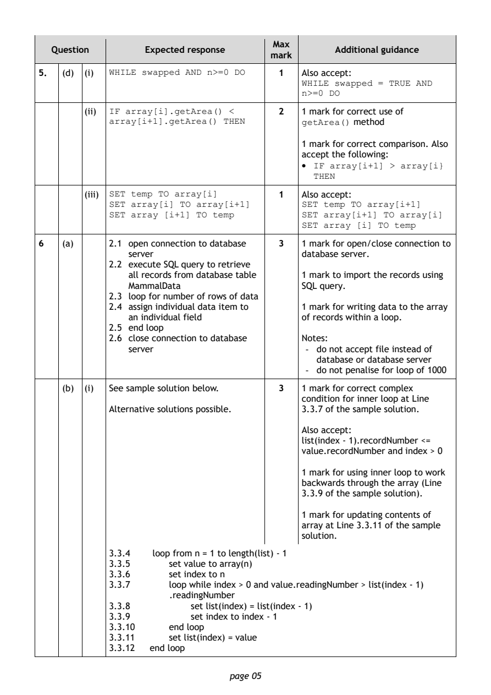
Selectable page text
Max
Question Expected response Additional guidance
mark
5. (d) (i) WHILE swapped AND n>=0 DO 1 Also accept:
WHILE swapped = TRUE AND
n>=0 DO
(ii) IF array[i].getArea() < 2 1 mark for correct use of
array[i+1].getArea() THEN getArea() method
1 mark for correct comparison. Also
accept the following:
• IF array[i+1] > array[i}
THEN
(iii) SET temp TO array[i] 1 Also accept:
SET array[i] TO array[i+1] SET temp TO array[i+1]
SET array [i+1] TO temp SET array[i+1] TO array[i]
SET array [i] TO temp
6 (a) 2.1 open connection to database 3 1 mark for open/close connection to
server database server.
2.2 execute SQL query to retrieve
all records from database table 1 mark to import the records using
MammalData SQL query.
2.3 loop for number of rows of data
2.4 assign individual data item to 1 mark for writing data to the array
an individual field of records within a loop.
2.5 end loop
2.6 close connection to database Notes:
server - do not accept file instead of
database or database server
- do not penalise for loop of 1000
(b) (i) See sample solution below. 3 1 mark for correct complex
condition for inner loop at Line
Alternative solutions possible. 3.3.7 of the sample solution.
Also accept:
list(index - 1).recordNumber <=
value.recordNumber and index > 0
1 mark for using inner loop to work
backwards through the array (Line
3.3.9 of the sample solution).
1 mark for updating contents of
array at Line 3.3.11 of the sample
solution.
3.3.4 loop from n = 1 to length(list) - 1
3.3.5 set value to array(n)
3.3.6 set index to n
3.3.7 loop while index > 0 and value.readingNumber > list(index - 1)
.readingNumber
3.3.8 set list(index) = list(index - 1)
3.3.9 set index to index - 1
3.3.10 end loop
3.3.11 set list(index) = value
3.3.12 end loop
page 05PDF page 6
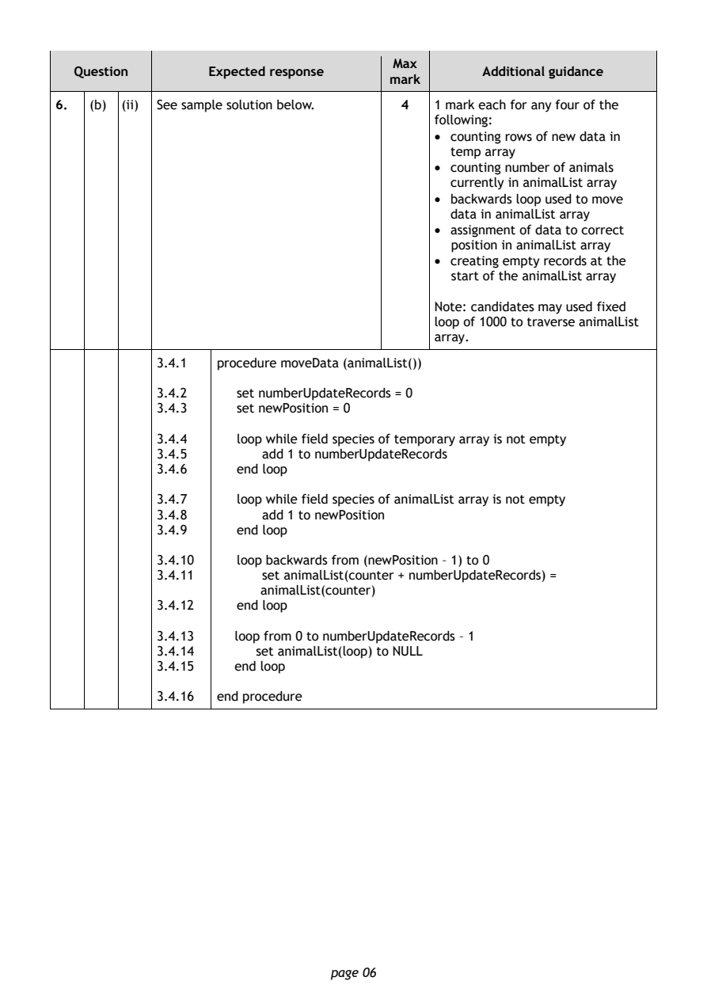
Selectable page text
Max
Question Expected response Additional guidance
mark
6. (b) (ii) See sample solution below. 4 1 mark each for any four of the
following:
• counting rows of new data in
temp array
• counting number of animals
currently in animalList array
• backwards loop used to move
data in animalList array
• assignment of data to correct
position in animalList array
• creating empty records at the
start of the animalList array
Note: candidates may used fixed
loop of 1000 to traverse animalList
array.
3.4.1 procedure moveData (animalList())
3.4.2 set numberUpdateRecords = 0
3.4.3 set newPosition = 0
3.4.4 loop while field species of temporary array is not empty
3.4.5 add 1 to numberUpdateRecords
3.4.6 end loop
3.4.7 loop while field species of animalList array is not empty
3.4.8 add 1 to newPosition
3.4.9 end loop
3.4.10 loop backwards from (newPosition – 1) to 0
3.4.11 set animalList(counter + numberUpdateRecords) =
animalList(counter)
3.4.12 end loop
3.4.13 loop from 0 to numberUpdateRecords – 1
3.4.14 set animalList(loop) to NULL
3.4.15 end loop
3.4.16 end procedure
page 06PDF page 7
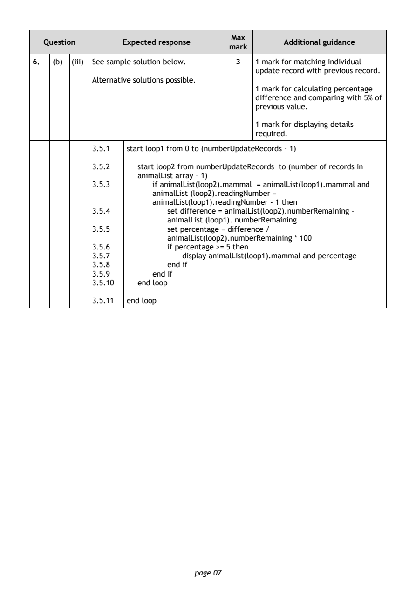
Selectable page text
Max
Question Expected response Additional guidance
mark
6. (b) (iii) See sample solution below. 3 1 mark for matching individual
update record with previous record.
Alternative solutions possible.
1 mark for calculating percentage
difference and comparing with 5% of
previous value.
1 mark for displaying details
required.
3.5.1 start loop1 from 0 to (numberUpdateRecords - 1)
3.5.2 start loop2 from numberUpdateRecords to (number of records in
animalList array – 1)
3.5.3 if animalList(loop2).mammal = animalList(loop1).mammal and
animalList (loop2).readingNumber =
animalList(loop1).readingNumber - 1 then
3.5.4 set difference = animalList(loop2).numberRemaining –
animalList (loop1). numberRemaining
3.5.5 set percentage = difference /
animalList(loop2).numberRemaining * 100
3.5.6 if percentage >= 5 then
3.5.7 display animalList(loop1).mammal and percentage
3.5.8 end if
3.5.9 end if
3.5.10 end loop
3.5.11 end loop
page 07PDF page 8
Question 7Question 8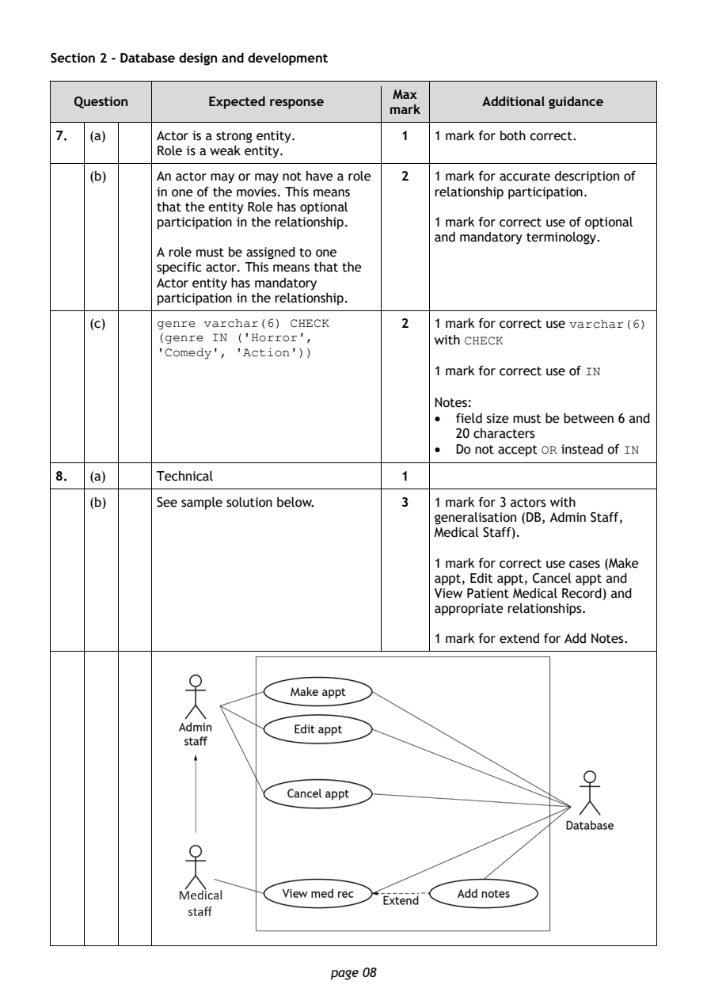
Selectable page text
Section 2 - Database design and development
Max
Question Expected response Additional guidance
mark
7. (a) Actor is a strong entity. 1 1 mark for both correct.
Role is a weak entity.
(b) An actor may or may not have a role 2 1 mark for accurate description of
in one of the movies. This means relationship participation.
that the entity Role has optional
participation in the relationship. 1 mark for correct use of optional
and mandatory terminology.
A role must be assigned to one
specific actor. This means that the
Actor entity has mandatory
participation in the relationship.
(c) genre varchar(6) CHECK 2 1 mark for correct use varchar(6)
(genre IN ('Horror', with CHECK
'Comedy', 'Action'))
1 mark for correct use of IN
Notes:
• field size must be between 6 and
20 characters
• Do not accept OR instead of IN
8. (a) Technical 1
(b) See sample solution below. 3 1 mark for 3 actors with
generalisation (DB, Admin Staff,
Medical Staff).
1 mark for correct use cases (Make
appt, Edit appt, Cancel appt and
View Patient Medical Record) and
appropriate relationships.
1 mark for extend for Add Notes.
page 08PDF page 9
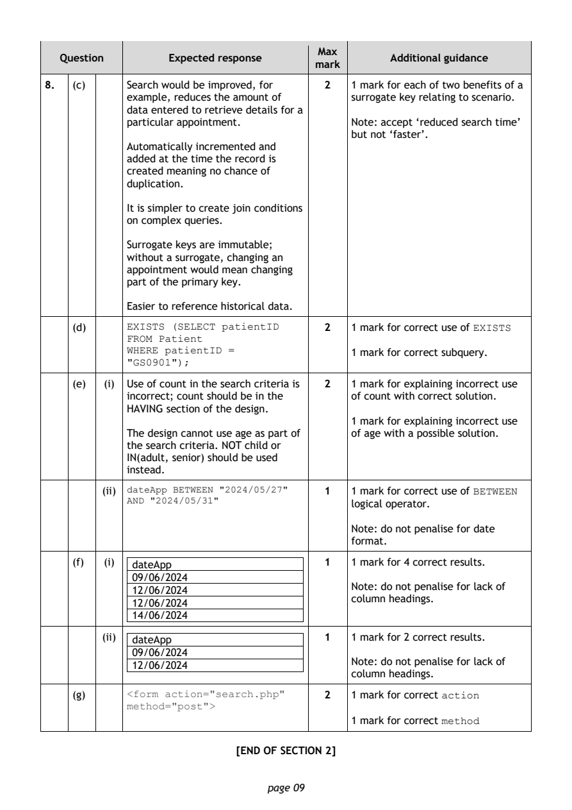
Selectable page text
Max
Question Expected response Additional guidance
mark
8. (c) Search would be improved, for 2 1 mark for each of two benefits of a
example, reduces the amount of surrogate key relating to scenario.
data entered to retrieve details for a
particular appointment. Note: accept ‘reduced search time’
but not ‘faster’.
Automatically incremented and
added at the time the record is
created meaning no chance of
duplication.
It is simpler to create join conditions
on complex queries.
Surrogate keys are immutable;
without a surrogate, changing an
appointment would mean changing
part of the primary key.
Easier to reference historical data.
(d) EXISTS (SELECT patientID 2 1 mark for correct use of EXISTS
FROM Patient
WHERE patientID = 1 mark for correct subquery.
"GS0901");
(e) (i) Use of count in the search criteria is 2 1 mark for explaining incorrect use
incorrect; count should be in the of count with correct solution.
HAVING section of the design.
1 mark for explaining incorrect use
The design cannot use age as part of of age with a possible solution.
the search criteria. NOT child or
IN(adult, senior) should be used
instead.
(ii) dateApp BETWEEN "2024/05/27" 1 1 mark for correct use of BETWEEN
AND "2024/05/31"
logical operator.
Note: do not penalise for date
format.
(f) (i) dateApp 1 1 mark for 4 correct results.
09/06/2024
Note: do not penalise for lack of
12/06/2024
column headings.
12/06/2024
14/06/2024
(ii) dateApp 1 1 mark for 2 correct results.
09/06/2024
Note: do not penalise for lack of
12/06/2024
column headings.
(g) <form action="search.php" 2 1 mark for correct action
method="post">
1 mark for correct method
[END OF SECTION 2]
page 09PDF page 10
Question 9Question 10Question 11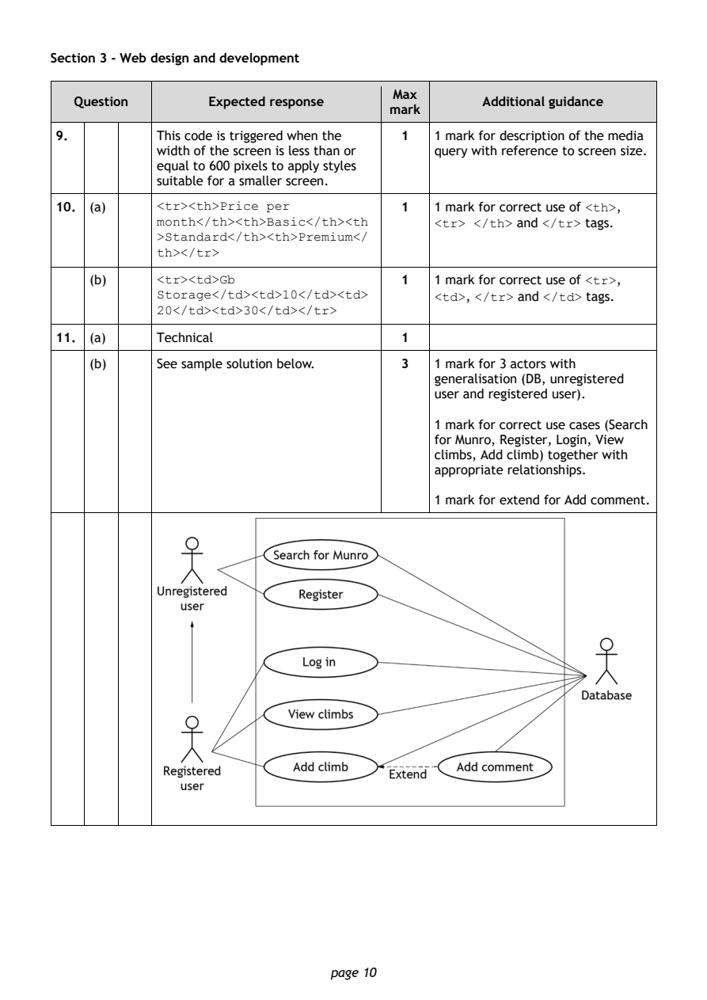
Selectable page text
Section 3 - Web design and development
Max
Question Expected response Additional guidance
mark
9. This code is triggered when the 1 1 mark for description of the media
width of the screen is less than or query with reference to screen size.
equal to 600 pixels to apply styles
suitable for a smaller screen.
10. (a) <tr><th>Price per 1 1 mark for correct use of <th>,
month</th><th>Basic</th><th <tr> </th> and </tr> tags.
>Standard</th><th>Premium</
th></tr>
(b) <tr><td>Gb 1 1 mark for correct use of <tr>,
Storage</td><td>10</td><td> <td>, </tr> and </td> tags.
20</td><td>30</td></tr>
11. (a) Technical 1
(b) See sample solution below. 3 1 mark for 3 actors with
generalisation (DB, unregistered
user and registered user).
1 mark for correct use cases (Search
for Munro, Register, Login, View
climbs, Add climb) together with
appropriate relationships.
1 mark for extend for Add comment.
page 10PDF page 11
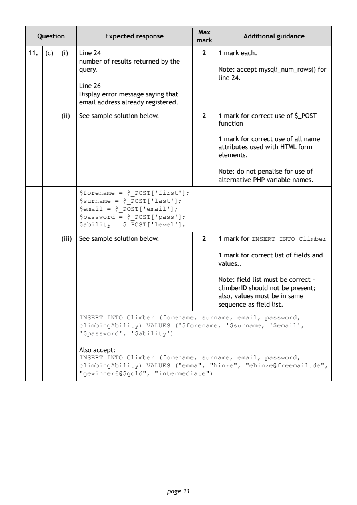
Selectable page text
Max
Question Expected response Additional guidance
mark
11. (c) (i) Line 24 2 1 mark each.
number of results returned by the
query. Note: accept mysqli_num_rows() for
line 24.
Line 26
Display error message saying that
email address already registered.
(ii) See sample solution below. 2 1 mark for correct use of $_POST
function
1 mark for correct use of all name
attributes used with HTML form
elements.
Note: do not penalise for use of
alternative PHP variable names.
$forename = $_POST['first'];
$surname = $_POST['last'];
$email = $_POST['email'];
$password = $_POST['pass'];
$ability = $_POST['level'];
(iii) See sample solution below. 2 1 mark for INSERT INTO Climber
1 mark for correct list of fields and
values..
Note: field list must be correct –
climberID should not be present;
also, values must be in same
sequence as field list.
INSERT INTO Climber (forename, surname, email, password,
climbingAbility) VALUES ('$forename, '$surname, '$email',
'$password', '$ability')
Also accept:
INSERT INTO Climber (forename, surname, email, password,
climbingAbility) VALUES ("emma", "hinze", "ehinze@freemail.de",
"gewinner6@$gold", "intermediate")
page 11PDF page 12
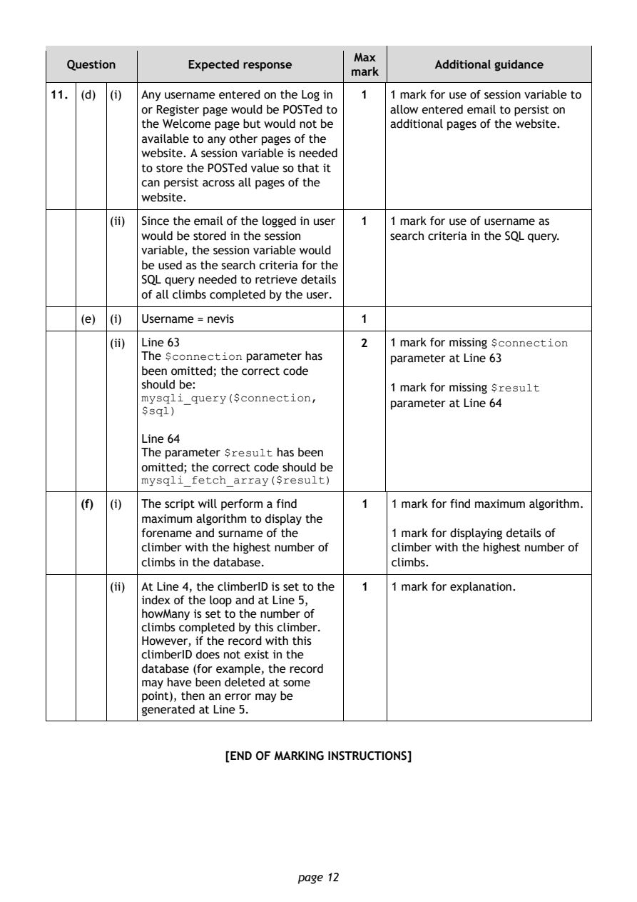
Selectable page text
Max
Question Expected response Additional guidance
mark
11. (d) (i) Any username entered on the Log in 1 1 mark for use of session variable to
or Register page would be POSTed to allow entered email to persist on
the Welcome page but would not be additional pages of the website.
available to any other pages of the
website. A session variable is needed
to store the POSTed value so that it
can persist across all pages of the
website.
(ii) Since the email of the logged in user 1 1 mark for use of username as
would be stored in the session search criteria in the SQL query.
variable, the session variable would
be used as the search criteria for the
SQL query needed to retrieve details
of all climbs completed by the user.
(e) (i) Username = nevis 1
(ii) Line 63 2 1 mark for missing $connection
The $connection parameter has parameter at Line 63
been omitted; the correct code
should be: 1 mark for missing $result
mysqli_query($connection,
parameter at Line 64
$sql)
Line 64
The parameter $result has been
omitted; the correct code should be
mysqli_fetch_array($result)
(f) (i) The script will perform a find 1 1 mark for find maximum algorithm.
maximum algorithm to display the
forename and surname of the 1 mark for displaying details of
climber with the highest number of climber with the highest number of
climbs in the database. climbs.
(ii) At Line 4, the climberID is set to the 1 1 mark for explanation.
index of the loop and at Line 5,
howMany is set to the number of
climbs completed by this climber.
However, if the record with this
climberID does not exist in the
database (for example, the record
may have been deleted at some
point), then an error may be
generated at Line 5.
[END OF MARKING INSTRUCTIONS]
page 12